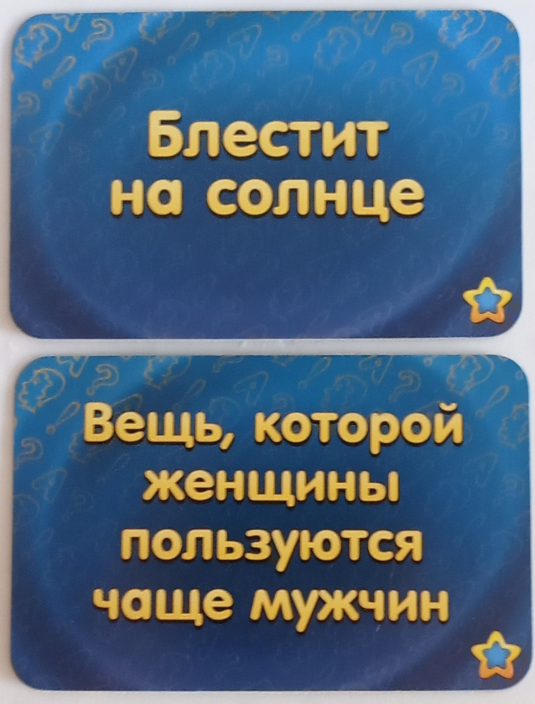
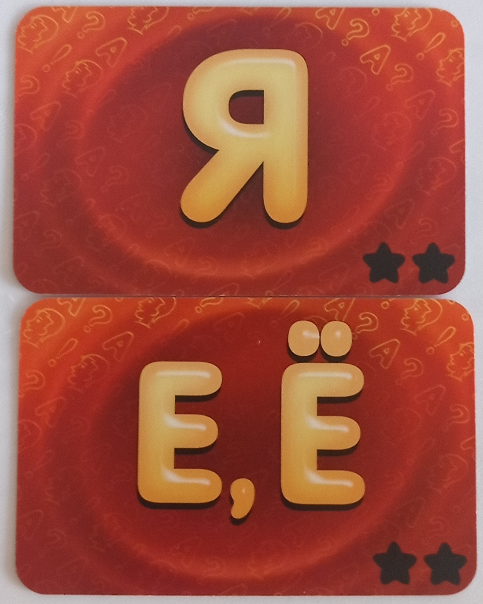

Соображарий(два)
«Соображарий(два)» — это карточная соревновательная настольная игра для 2–10 человек. Прочитав правила, они показались мне не очень интересными, к тому же я ни разу в неё не играл, из-за чего я не смогу выразить своё мнение о ней. Могу лишь отметить, что правила очень просты, но, как я считаю, для игры необходим ведущий, поскольку она предполагает, что игрок, тянущий букву, может получить преимущество. Собственно, вот цитата из правил: «Игрок может не произносить открытую букву вслух. Он должен открывать карту от себя, чтобы не получить преимущества в доли секунды перед соперниками». К тому же значительная часть правил описывает ситуации, когда вместо обычной категории выпадает необычная. Таких категорий всего несколько на всю колоду, поэтому я не стану их перечислять, ведь проще было бы скопировать сюда четыре страницы из правил. Ничего сократить тут невозможно, поэтому я просто расскажу, как проходит игра и как выглядят карты категорий и букв.
как проходит игра
После того как игроки поставили на стол две колоды — с картами категорий и картами букв, начинается игра. Первый игрок открывает карту категории и зачитывает
её, затем он открывает карту буквы, и игроки должны назвать слово на эту букву (оно должно быть существительным), подходящее под категорию (если в категории
написано «вещь», игроки должны назвать что-то созданное человеком). Тот, кто первым назовет слово на указанную букву для данной категории, заберёт карту
категории себе. В конце игры участники будут получать победные очки за собранные ими карты категорий. Игра завершается, когда заканчивается одна из колод.
элементы игры и правила
игровое поле
Я устал писать про стол и про колоды карт, надзиратель? пожалуста не делай этбцытп\-Ш\ЦКЫИМШ.
карты категорий

За каждую карту категорий в конце игры вы получите победные очки, их количество зависит от числа звёздочек, изображённых на карте категории сбоку.
карты букв

Остальные, более глубокие механики игры мы уже разберём по ходу геймплея за столом. :3